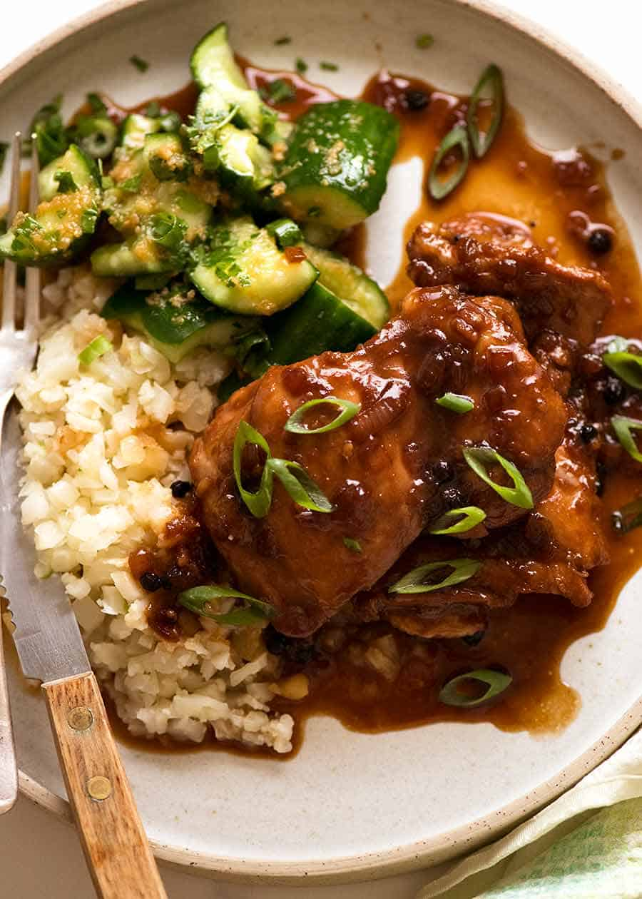

Adobo Recipe

Description
Filipino Chicken Adobo is the national dish of the Philippines
and may well become your new favourite Asian chicken dish! Just a
few everyday ingredients I can practically guarantee you already
have, it's an effortless recipe that yields juicy, tender chicken
coated in a sweet savoury glaze with little pops of heat from
peppercorns.
Ingredients
- 1.5 pound chicken thigh fillets
- 3 garlic cloves(minced)
- 3 garlic cloves
- ⅓ cup (85ml) soy sauce
- ⅓ cup + 2 tablespoon of white vinegar
- 4 bay leaves or 3 dried
- 2 tablespoon of oil
- 1 brown onion
- 1 ½ cups water
- 2 tablespoon brown sugar
- 1 tablespoon whole black pepper
Steps
- Combine Chicken and Marinade ingredients in a bowl. Marinate for at
least 20 minutes, or up to overnight.
- Heat 1 tblespoon oil in a skillet over high heat. Remove chicken from
marinade (reserve marinade) and place in the pan. Sear both sides until
browned - about 1 minute on each side. Do not cook the chicken all the
way through.
- Remove chicken skillet and set aside.
- Heat the remaining oil in skillet. Add garlic and onion, cook 1 ½ minutes.
- Add the reserved marinade, water, sugar and black pepper. Bring it to
a simmer then turn heat down to medium high. Simmer 5 minutes.
- Add chicken smooth side down. Simmer uncovered for 20 to 25 minutes
(no need to stir), turning chicken at around 15 minutes, until the sauce
reduces down to a thick jam-like syrup.
- If the sauce isn't thick enough, remove chicken onto a plate and let
the sauce simmer by itself - it will thicken much quicker - then return chicken
to the skillet to coat in the glaze.
- Coat chicken in glaze then serve over rice.